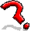

Block Actions
These block actions are used in the Block Action packet. Depending on the block, different action IDs mean different things:
| Block | ID | Section |
|---|---|---|
| Note Block | 25 | Note Block |
| Piston | 33 | Piston |
| Sticky Piston | 29 | |
| Chest | 54 | Chest |
| Trapped Chest | 146 | |
| Ender Chest | 130 | Ender Chest |
| Beacon | 138 | Beacon |
| Mob Spawner | 52 | Spawner |
| End Gateway | 209 | End Gateway |
| Shulker Box | 219-234 | Shulker Box |
| Anything else | Ignored | |
Note Block
Displays a colored note particle and plays the appropriate note sound effect.
Action IDs
The action ID is used to determine the instrument to play.
| Type ID | Instrument | Material/block | Sound |
|---|---|---|---|
| 0 | Harp | Any other material | block.note.harp
|
| 1 | Bass Drum | Stone | block.note.harp
|
| 2 | Snare Drum | Sand | block.note.snare
|
| 3 | Clicks/Sticks | Glass | block.note.hat
|
| 4 | Bass guitar | Wood | block.note.bass
|
| 5 | Flute | Clay | block.note.flute
|
| 6 | Bell | Gold block | block.note.bell
|
| 7 | Guitar | Wool | block.note.guitar
|
| 8 | Chime | Packed ice | block.note.chime
|
| 9 | Xylophone | Bone block | block.note.xylophone
|
Any unknown ID is treated as if it were 0.
The sound event block.note.pling is unassigned and unused.
Action param
The pitch of the note (between 0–24 inclusive where 0 is the lowest and 24 is the highest). More information about how the pitch values correspond to notes in real life and how they correspond to pitch scaling on the sound effects can be found in the Note Block article on the Minecraft wiki.
Piston
Extends or retracts the piston. Always used on the piston base (either sticky or regular), never on the head. Also plays the extending/retracting sound.
|  | The following information needs to be added to this page: |
| It's unclear what blocks and tile entities the client needs to create, and which ones the server creates. From a rough glance, it seems like the server changes the piston base block, but the client needs to create the piston head, create the block 36es, and create the piston moving tile entities. As such, the server needs to make the same assumptions as the client, or else ghost blocks may occur. |
{kind=link}
Action IDs
0 to extend the piston, 1 to retract it.
Action param
The direction the piston is facing (which is a metadata field on the piston). This is only used when the piston is retracting to generate the nearest block 36; all other parts appear ignore this parameter and use the piston's actual metadata field.
| Direction ID | Direction |
|---|---|
| 0 | Down |
| 1 | Up |
| 2 | South |
| 3 | West |
| 4 | North |
| 5 | East |
Chest
Action IDs
There is only one action, with ID 1. It is used to update the number of players who are looking in the chest, which in turn is used to update lid animation.
This value seems to be recalculated every 200 ticks, but isn't resent until a player closes/reopens.
Action param
When the action ID is 1, this is the number of players who have the chest open. If 0, then the chest is closed; if 1 or more the chest is open.
Ender chest
Action IDs
There is only one action, with ID 1. It is used to update the number of players who are looking in the ender chest, which in turn is used to update lid animation. This is recalculated and resent every 80 ticks (4 seconds), even if the value hasn't changed.
Action param
When the action ID is 1, this is the number of players who have the chest open. If 0, then the chest is closed; if 1 or more the chest is open.
Beacon
Action IDs
There is only one action, with ID 1. It is used to tell the client to recalculate the beacon beam. This happens whenever the beacon base receives a block update. Additionally, whenever a stained glass block or stained glass pane is placed above a beacon that can see the sky. The client goes through all blocks above the beacon, disabling/enabling the beam if it is covered and recoloring the beam if it passes through glass or stained glass.
Note that the beacon beam is also recomputed every 80 ticks (4 seconds), but no block action occurs when that happens. The block action allows placing of a beacon and recoloring of the beam to potentially be instant, but does not make all other changes to the beam instant.
Action param
Ignored.
Spawner
Action ID
There is only one action, with ID 1, which resets the delay in the spawner to the minimum spawn delay.
Action param
Ignored.
End gateway
Action ID
There is only one action, with ID 1, which triggers the magenta beam emitted by the end gateway when an entity passes through it.
Action param
Ignored.
Shulker Box
Animates the shulker box's shell opening.
Action IDs
There is only one action: 1, which updates the number of players who are looking in the shulker box.
Action param
If the action is 1, updates the number of players who have the shulker box open. If 0, the shulker box enters its closing animation; if 1, the shulker box enters its opening animation.